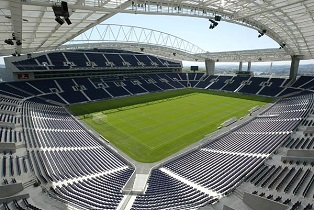

Historia
El Fútbol Club Oporto1 (en portugués y oficialmente: Futebol Clube do Porto), es un club de fútbol de la ciudad de Oporto, Portugal. Fue fundado el 28 de septiembre de 1893 y juega en la Primera División de Portugal. Disputa sus encuentros como equipo local en el Estádio do Dragão desde 2008, y utiliza camiseta azul y blanca a franjas verticales con pantalón azul.
Escudo
Titulo |
Cantidad |
| Uefa Champios League | 2 |
| Liga de Portugal | 27 |
| Copa de Portugal | 16 |
| Mundial de clubes | 0 |
| Supercopa de Portugal | 20 |
| Supercopa de europa | 1 |
Estadio
Tecnico
Capitan